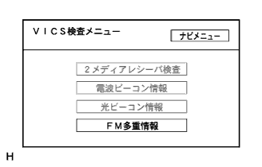
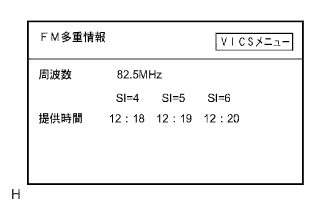

DVD Navigation System Diagnowship System |


Starting method 1
Make the vehicle stopped.
Start IG Switch ACC, ON or Engine.
 |
Navigation receiver ASSY presses the "information" key, and operate the headlap Dimaswitch as OFF → Tail → OFF → OFF → Tail → OFF.
When the diagnostic is started, the "service inspection" screen is displayed, and a service inspection is performed.
 |
Select the "Inspection Menu" and display the diagram inspection menu screen.
| display | Content |
|---|---|
| Service inspection | Collect system inspection+diag memory, and display the current and past test results of each connection device from the results of both sides. |
| Display inspection | Display the screen for performing a unique inspection of the display part |
| Navigation inspection | Display the screen for performing unique inspections of the navigation ECU part |
How to start 2
Make the vehicle stopped.
Start IG Switch ACC, ON or Engine.
 |
Press the "image quality / erasure" key of the navigation receiver ASSY to display the image quality adjustment screen.
Touch the upper left and lower left of the image quality adjustment screen slowly, as in the upper left → lower left → lower left → lower left → lower left → lower left.
When the diagnostic is started, the "service inspection" screen is displayed, and a service inspection is performed.
|
Select the "Inspection Menu" and display the diagram inspection menu screen.
| display | Content |
|---|---|
| Service inspection | Collect system inspection+diag memory, and display the current and past test results of each connection device from the results of both sides. |
| Display inspection | Display the screen for performing a unique inspection of the display part |
| Navigation inspection | Display the screen for performing unique inspections of the navigation ECU part |
Method of unlocking
The release method is turned off the IG switch.Or press the “image quality · erasing” key for 3 seconds or more.
Service inspection
 reference.
reference. |
| display | Content |
|---|---|
| Color bar inspection | Inspection of display color display |
| Touch switch test | Inspection of the touch switch operating status of the display |
| Panel switch test | Inspection of each switch operating status on the outer periphery of the display |
| Vehicle signal inspection | Inspection of the status of the vehicle side signal entered in the display |
reference.| display | Content |
|---|---|
| GPS information | Display GPS related information |
| Vehicle signal & sensor inspection | Display the vehicle signal information to enter in the navigation receiver ASSY |
| VICS test | VICS Receiver Inspection / Call on the display screen of each chakon information, etc. |
| Product information | Display the navigation receiver ASSY and the map disk version and manufacturer name |
| Color bar inspection | Check the color display of the navigation receiver ASSY |
| Memory evacuation / reading | You can use a mamory catcher to evacuate and read navigation memory information. |
 |
GPS information
Start diagnostic.
Select "Inspection Menu".
Select "Navi Inspection".
Select "GPS information".
Check GPS related information.
| display | meaning |
|---|---|
| Satellite information | Display "satellite number", "elevation angle", "signal level", and "receiving status" of satellites captured by the antenna (up to 12 satellites) |
| Date and time | The date and time information obtained from the GPS receiver is displayed in "year", "moon", "day", "time", "second", and "seconds" |
| position | Display the latitude and longitude information of the current location in "degree", "minutes" and "seconds" |
| display | conditions |
|---|---|
| in use | When using the satellite for positioning |
| Under reception | If the satellite is captured but is not used for positioning |
| - | If the satellite has not been captured |
| display | conditions |
|---|---|
| 2D | At 2D positioning |
| 3D | At 3D position |
| D-2D | Differential effective 2D position |
| D-3D | Differential valid at 3D position |
| NG | When the positioning data is not used |
| error | When receiving error occurs |
| - | Other than the above |
 |
Vehicle signal & sensor inspection
reference.|  |
VICS test
Start diagnostic.
Select "Inspection Menu".
Select "Navi Inspection".
| display | Content |
|---|---|
| 2 Media Recever Test | VICS receiver diagram information (vehicles equipped with VICS receivers) |
| Radio beacon information | Displays the radio beacon information held by the navigation receiver ASSY (VICS receiver equipped car) |
| Hikari Bi Con | Displays the optical beet information held by the navigation receiver ASSY (car with VICS receiver) |
| FM multiple information | Display FM multiple information held by the navigation receiver ASSY |
|  |
Select "FM multiple information".
| display | meaning |
|---|---|
| frequency | Display the receiving frequency |
| Time | Display the provision time of the FM multiple broadcast data under reception |
 |
Product information
Start diagnostic.
Select "Inspection Menu".
Select "Navi Inspection".
Select "Product Information".
Check the product information.
| display | Content |
|---|---|
| Navi maker name (*1) | Display the manufacturer name of the navigation receiver ASSY |
| Navigation version number (*2) | Display the version of the navigation receiver ASSY |
| Disc maker name (*3) | The item name in the "All Data Management Frame-Data Volume" on the map disc is converted to Roman alphabet based on the MID stored in the "Data creator identification" and displays the disk maker name (cannot be converted.If the MID is stored, the MID is displayed in hexadecimal). |
| Media version number (*4) | Display data stored in the "All Frame Management-Data Volume" on the map disk |
 |
Navi color bar inspection
reference.